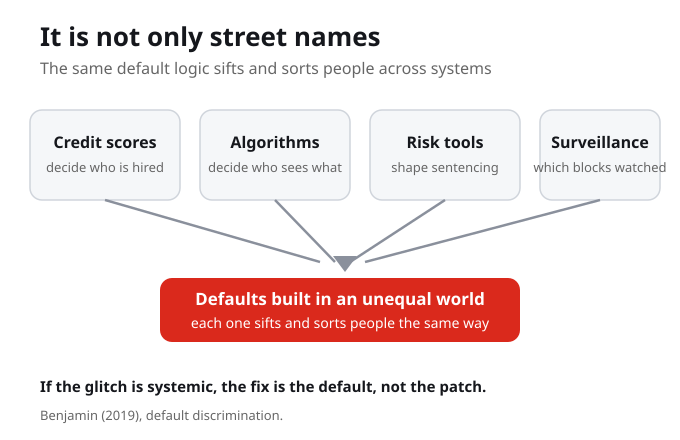

What Do You Know?
1. Default discrimination, as Benjamin uses it, is best described as harm that arrives through:
2. This week's framing question for the dimension is:
3. Benjamin describes database design as an exercise in:
4. When a map voice reads Malcolm X Boulevard as Malcolm Ten, it does so because:
5. For default discrimination to operate, Benjamin argues it requires:
6. If the answer to is the glitch systemic is yes, the fix is:
7. Beyond street names, the week names systems that sift and sort people through defaults, including:
Purpose and Learning Outcomes
Week 4 continues Part II, where we dissect the New Jim Code dimension by dimension. This week's dimension is default discrimination, the way technology can carry inequity forward through defaults and inaction, so that systemic harm looks like a mere glitch.
By the end of this week you should be able to
- Define default discrimination as harm that arrives through the defaults, data, and assumptions of a system, not only through active design.
- Apply Benjamin's glitch-versus-systemic test to a real technological failure.
- Explain why database design is, in Benjamin's words, an exercise in worldbuilding.
- Identify a real default that quietly disadvantages a group, and add it to your Living Cartography.
Guiding Questions
- What is the difference between a harm someone designs on purpose and a harm that arrives through a default? Why does Benjamin insist the second is just as real?
- Is the glitch systemic? When a system fails a group and the failure is called a glitch, how would you decide whether it is an accident or a design working as built?
- Whose world is treated as the default in a system you use, and who has to adapt themselves to fit it?
- If database design is an exercise in worldbuilding, what world is being built, and who is left out of it?
- If the fix is not patching the glitch but changing the default, what default would you change first?

Is the Glitch Systemic?
Default discrimination is harm that arrives through the defaults of a system: the settings, the data, the assumptions that treat one group's world as normal. No one has to type a slur into the code, because the inequity is already in the defaults and no one designed against it. So when a system fails someone and the failure is called a glitch, ask whether the glitch is systemic. If yes, the fix is the default, not the patch.
Default discrimination needs no one to type a slur into the code. The inequity is already in the defaults, and the harm arrives because no one designed against it.
When a system fails someone and the failure is called a glitch, how would you decide whether it is an accident or a design working as built?
The question that holds the week: is the glitch systemic?
Here is the question that holds the week: is the glitch systemic? A glitch is supposed to be small and temporary, an accident someone will patch. Benjamin asks us to slow down on that word, because sometimes the failure we call a glitch is the system working exactly as it was built, in a world that was already unequal.
The word glitch promises something small and temporary. Benjamin asks us to slow down on it, because the failure we call a glitch is sometimes the system working exactly as it was built.
If the failure is the predictable result of how the system was built, who benefits from still calling it a glitch?
Default discrimination
So default discrimination is harm that arrives through the defaults of a system, the settings, the data, the assumptions that treat one group's world as normal. No one has to type a slur into the code. The inequity is already in the defaults, and no one designed against it.
Default discrimination is harm that arrives through the settings, the data, and the assumptions that treat one group's world as normal. It does not require a racist designer, only an inequity left in the defaults.

Benjamin gives a small example
Benjamin gives a small example. A map voice reads Malcolm X Boulevard as Malcolm Ten, reading the X as a Roman numeral because that is the default. A tiny glitch, but ask the bigger question: whose knowledge is the default, and whose has to be the exception. She has a phrase for this: database design is an exercise in worldbuilding. People build a picture of the world into a system, and in a society shaped by racism that picture carries the old order forward.
A map voice reads Malcolm X Boulevard as Malcolm Ten because reading the X as a Roman numeral is the default. The tiny glitch points to a bigger question: whose knowledge is the default, and whose has to be the exception.
If database design is an exercise in worldbuilding, what world is being built, and who is left out of it?

It is not only street names
And it is not only street names. Credit scores get used to decide who is hired. Algorithms decide who sees which opportunity. Risk tools shape sentencing and parole. Surveillance decides which blocks get watched. Each one sifts and sorts people through defaults built in an unequal world. So when a system fails someone and it is called a glitch, ask: is the glitch systemic. If yes, the fix is the default, not the patch.
Credit scores decide who is hired, algorithms decide who sees which opportunity, risk tools shape sentencing, and surveillance decides which blocks get watched. Each one sifts and sorts people through defaults built in an unequal world.
What You Are Learning This Week
Default Discrimination Needs No Racist Designer
Harm arrives through the defaults of a system, the settings, the data, and the assumptions that treat one group's world as normal. No one has to type a slur into the code, because the inequity is already in the defaults and no one designed against it.
Ask Whether the Glitch Is Systemic
A glitch is supposed to be small and temporary, an accident someone will patch. Benjamin asks us to slow down on that word, because sometimes the failure we call a glitch is the system working exactly as it was built.
Database Design Is Worldbuilding
People build a picture of the world into a system, and in a society shaped by racism that picture carries the old order forward. The map that reads Malcolm X as Malcolm Ten shows whose knowledge is set as the default.
The Fix Is the Default, Not the Patch
Credit scores, hiring algorithms, risk tools, and surveillance all sift and sort people through defaults built in an unequal world. When the answer to is the glitch systemic is yes, the fix is the default, not the patch applied faster.
Connections to This Week
Week 3 named engineered inequity, bias built into a system on purpose and emerging from the social context of design. We established that the failure is structural rather than accidental. This week turns to a second dimension that does not need any designer at all.
Default discrimination is harm that arrives through the defaults, the settings, the data, and the assumptions that treat one group's world as normal. The framing question that holds the week is: is the glitch systemic? If yes, the fix is the default, not the patch.
Having seen how a system can carry inequity forward through inaction, we move toward coded exposure, how being watched, recorded, and made visible by these systems becomes its own form of harm. The defaults that sift and sort people are the same systems that surveil them.
Reflection Corner
When a system fails someone and the failure is called a glitch, who benefits from that word? If the glitch is systemic, then it was never a glitch at all but a design working as intended. How would you tell the two apart, and who gets to decide which failures count as mere glitches and which count as harms?
Your notes save automatically on this device and stay after you close your browser or shut down. Use Save my notes (below) to download a copy you can keep or open on another device.
What You Now Know
Why does Benjamin insist that a harm arriving through a default is just as real as one designed on purpose?
The Malcolm Ten example matters because it asks the bigger question of:
Calling a systemic failure a glitch does work because it:
Design as worldbuilding means that in a society shaped by racism, the picture built into a system:
What to Do Next
Read Benjamin on Default Discrimination
Race After Technology, the chapter Is the Glitch Systemic? and the section Automating Anti-Blackness. This is the second dimension of the New Jim Code. Pay attention to how a glitch can be the system working as built.
Trace the Malcolm Ten Example
Follow Benjamin's small example, the map voice that reads Malcolm X Boulevard as Malcolm Ten. Ask the bigger question she raises: whose knowledge is set as the default, and whose has to be the exception.
Find a Default and Add It to Your Living Cartography
Identify a real default that quietly disadvantages a group, beyond street names: a credit score, a hiring algorithm, a risk tool, or a surveillance system. Add it to your Living Cartography and name the world its defaults were built for.
References
Benjamin, R. (2019). Race after technology: Abolitionist tools for the New Jim Code. Polity Press. (Default discrimination, the second dimension; the chapter Is the Glitch Systemic? and the section Automating Anti-Blackness.)